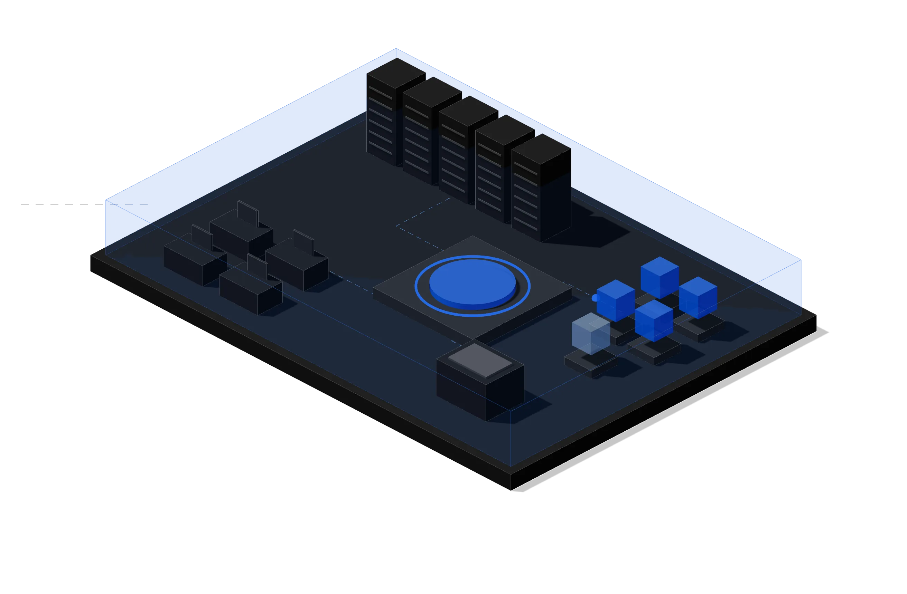
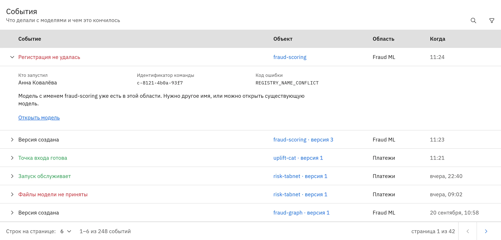

Промышленность
Прогноз поломок оборудования
Ремонт начинается после остановки линии.
Предиктивные
Внеплановые простои в месяц, часы простоя
Свои модели на своих серверах: прогноз спроса, разбор документов, чат для сотрудников. Данные и запросы остаются внутри.

Схема
Данные защищает место, где модель работает, и правила доступа к ней.
Остаются на внутренних серверах компании. Выход в интернет не нужен.
Выбирает компания:
Помогает разобраться, если что-то пошло не так: какая операция, когда, с какой версией модели и чем закончилась.
Данные и запросы остаются на серверах компании. Интернет не нужен.
Атриуму нужен только Kubernetes. Серверы, видеокарты и операционную систему под ним компания выбирает сама.
Сейчас каждая команда сама поднимает модель на сервере и сама решает, кто к ней обращается. В Атриуме все модели компании запускаются одинаково, с общими правами и общим журналом.
Один порядок запуска моделей для всех команд. Команды запускают модели сами, каждая в своём пространстве и в пределах выделенных ресурсов. ИТ не настраивает сервер под каждый проект и видит все модели компании в одном списке.
Ответы для проверки уже готовы. Данные и модели остаются на внутренних серверах. К модели обращаются только после входа по OAuth 2.0 и OpenID Connect, права каждого сотрудника задаёт администратор.
Модель доходит до работы без очереди в ИТ. Команда сама добавляет модель из браузера, запускает её и получает адрес для программ компании.
Задачи из промышленности, страхования и банков. У каждой указано, по какому показателю видно результат.
Все сценарииПромышленность
Ремонт начинается после остановки линии.
Предиктивные
Внеплановые простои в месяц, часы простоя
Страхование
Заявления и справки читают вручную, дело ждёт днями.
Генеративные
Время обработки одного дела
Банки
Подозрительную операцию замечают после списания денег.
Предиктивные
Доля ложных срабатываний, операции на ручной проверке
Атриум стоит между программами компании и моделями. Всё работает на её серверах.

Подробности и сроки по каждому пункту на странице для ИТ.
Для ИТ и безопасностиАтриум ставится на ИИ-серверы производителя. Для производителей открыта партнёрская программа.
Производителям серверовИнтегратор ставит Атриум в контуре компании, подключает программы и сопровождает.
ИнтеграторамУстановка вместе со специалистами компании. Обновления и поддержка по почте входят в лицензию.
С чего начатьС одной задачи и одной команды.
По видеосвязи, на задаче компании.
Установка на серверах компании для одной команды и одной модели.
Подключение остальных команд и программ.
После установки не нужен: Атриум и модели работают на внутренних серверах без выхода наружу. Установка на закрытые серверы пока идёт вместе со специалистами Атриума, в один шаг — IV кв. 2026.
Предиктивные и генеративные, открытые и собственные. Что уже прогнано на стенде, перечислено на странице для ИТ.
Для пробного запуска ориентир такой: три машины по 8 ядер и 32 ГБ памяти. Генеративным моделям нужны видеокарты.
Пока нет. Включение в реестр запланировано на I квартал 2027 года.
Атриум продаётся по годовой лицензии. Цена зависит от числа пользователей и видеокарт, а начать можно с пробного запуска на задаче компании.
Атриум ставится вместе со специалистами компании или через интегратора. Обновления и поддержка по почте входят в лицензию.